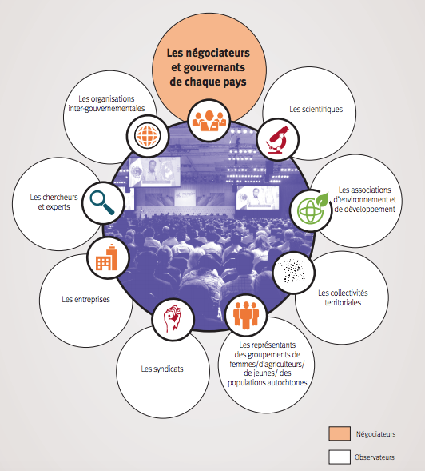

L’acronyme COP fait référence à la « Conférence des parties » (Conference of the Parties en anglais) de la Convention-cadre des Nations unies sur les changements climatiques (CCNUCC). Ce traité international, adopté au Sommet de la Terre de Rio de Janeiro en 1992, reconnaît l’existence d’un changement climatique d’origine humaine et donne aux pays industrialisés le primat de la responsabilité pour lutter contre ce phénomène. Il a été ratifié par 197 parties (196 Etats et l’Union européenne).
Notre électricité et notre chauffage proviennent en grande partie du charbon, du pétrole et du gaz. Il est possible de réduire sa consommation d’énergie en diminuant le chauffage et la climatisation, en optant pour des ampoules LED et des appareils électriques à faible consommation, en lavant son linge à l’eau froide ou en le suspendant pour le faire sécher au lieu d’utiliser un sèche-linge.
Partout dans le monde, les routes sont surchargées de véhicules, dont la plupart roulent au diesel ou à l’essence. Privilégier la marche ou le vélo à la voiture permet de réduire les émissions de gaz à effet de serre et contribue à une meilleure santé et à une meilleure forme physique. Pour les longues distances, pensez à prendre le train ou le car. Enfin, pratiquez le covoiturage chaque fois que cela est possible.
En consommant plus de légumes, de fruits, de céréales complètes, de légumineuses, de noix et de graines, et moins de viande et de produits laitiers, on peut réduire considérablement son impact sur l’environnement. La production d’aliments d’origine végétale entraîne généralement moins d’émissions de gaz à effet de serre et nécessite moins d’énergie, de terres et d’eau.
Lorsque l’on jette de la nourriture, on gaspille également les ressources et l’énergie qui ont été utilisées pour la cultiver, la produire, l’emballer et la transporter. Par ailleurs, une fois dans un site d’enfouissement des déchets, les aliments se décomposent et produisent du méthane, un puissant gaz à effet de serre. Veillez donc à consommer les aliments que vous achetez et à composter vos déchets.
Les appareils électroniques, les vêtements et tous les autres biens que nous achetons génèrent des émissions de carbone à chaque étape de leur production, de l’extraction des matières premières à la fabrication et au transport des marchandises jusqu’au lieu de vente. Pour protéger notre climat, achetez moins, choisissez des articles d’occasion, réparez tout ce que vous pouvez et recyclez.